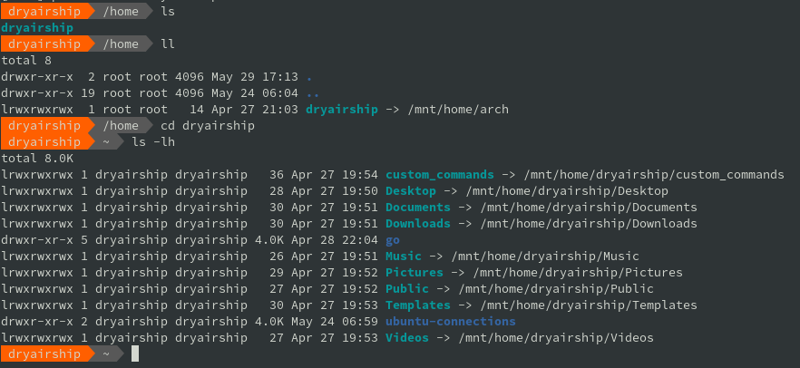

Noob days
We had the first computer in our house when I was 8. That was Windows XP. A few years later, my father installed Windows 2000 alongside XP (because he needed some software for his work which required Windows 2000). And so I got to know about dual boot. My friends didn’t believe me when I told them that you could run 2 OSes on one computer. :p
When I was 15, I hacked my school’s website (no it wasn’t an SQL injection). That got me really interested in cyber security. Soon, I found that hackers use Kali Linux (*script kiddie sound intensifies*). So I downloaded the ISO and did a live boot. I didn’t understand much, but it seemed cool. Then I read more about linux. I found out that Kali is not for beginners, and that it is a “debian-based” distro. I misinterpreted that as “it would be easier to learn how to use debian”. So the next day I downloaded the debian ISO and did a Live Boot. I didn’t understand much, again. And TBH, it didn’t even seem “cool”. But still I wanted to install it.
So I followed some blog to dual boot Windows and Debian and started following it. I know you’re expecting this :p - I messed up some steps and ended up replacing Windows 7 with Debian. I also lost all my files :(.
While I could have lived with using Debian instead of Windows, I definitely couldn’t have lived without my files. So I started looking for file recovery softwares. Since I was an absolute beginner at linux, I didn’t know how to install/run/use linux programs. Hence, I reinstalled Windows 7 and removed Debian. Finally, I ran a data recovery software and recovered most of my files.
That was quite an adventure. However, I didn’t stop, and before starting college I had tried Fedora and Mint.
More Noob days
When I got my own laptop, I installed Ubuntu (because everyone else was doing that :P). On the 1TB hard disk, I made 4 partitions - 2 NTFS (for Windows 10) and 2 ext4 (for Ubuntu) (A few months later that changed to 1 NTFS and 3 ext4 :p ). Others were making a separate home partition for ubuntu, while I installed it entirely in one partition. A separate home partition didn’t make sense to me then. In Programming Club’s winter camp, I asked Yash why someone would need a separate home partition, and his answer was pretty much the same as this. At that time, I thought I’d never need it.
Moving away from noob days
In December 2019, while working at the C3i Lab, I realized I’d need Kali Linux. VirtualBox was giving me some strange errors and so I deemed it better to install it alongside Ubuntu and Windows. However, before installing, I recalled the thing about a separate home directory, and thought it would have been better had I known that before installing Ubuntu. :(
Thankfully, I found this page on Ubuntu Documentation which has detailed steps regarding shifting home directory to a different partition. This was exactly what I needed, and it helped me set up a separate home partition successfully. I then installed Kali, and voila - I had a triple boot laptop.
End of noob days
Shifting my home directory to a different partition, and succesfully installing Kali alongside Ubuntu and Windows - both in one day, got me pretty excited. Now I wasn’t scared of installing OSes. For my GSoC application, I was given a task related to reproducing an error on Debian Buster - and I installed it as the 4th OS on my computer. Installing OSes is more fun than it appears to be.
Noob days are back
One day, I was working on some python code and it required me to install a library. The python3 on my Ubuntu was python3.6, while the library required python3.7. So I installed python3.7. However, that led to new problems. So I wanted to remove python3.6. I couldn’t find any way to remove just python3.6, and leave python3.7 untouched. So I made an amazing plan - completely remove python3, and reinstall python3.7. Sounds like a good plan, right?
And so I purged python3-dev and python3 (Yes I really did that). The next moment, it gave me a list of some 100+ packages to be removed. I was like, yeah cool whatever I’m just going to press enter. And so it started uninstalling. While it was at it, I searched about the repercussions on uninstalling python3-dev and python3. I found this, this, and this. Okay LoL. After the uninstall, I couldn’t start my terminal :(
PSA: do this type of research before you uninstall something, not when the uninstall is running.
And this is how I messed up my Ubuntu. The answers in the linked questions didn’t help me. Also, Ubuntu 20 had been released about 3-4 days ago, and it would have been an easy option to overwrite Ubuntu 18 with Ubuntu 20. But I also wanted to try out Arch. And Yash recommended me to use Arch. So I installed Arch by overwriting the Debian Buster installation.
Shooing away noob days, again
When I used the same home directory for Kali and Ubuntu, starting the terminal in Kali game me warnings regarding some packages not being found. So I assumed that I’d get even more warnings if I try to share the same home with Arch. So instead of adding the home partition as an entry in fstab, I decided to create a new folder on the existing home partition, and create a symlink for it to be used as my home on Arch. Inside that folder, I have further symlinks for the folders that I’d want to share across partitions (like Desktop, Downloads, …). This way, my files remain shared across partitions, but each partition gets its own config files, libraries, executables, etc. This is how my symlink solution looks like:

The separate home partition is mounted at /mnt/home. It has a folder arch which I use as my home directory on my Arch system. /mnt/home/dryairship is the home directory that I used in Ubuntu 18.
Will noob days be back?
A week ago, I overwrote the Ubuntu 18 partition with Ubuntu 20 (I needed Ubuntu to check something related to my GSoC project). Ubuntu reminds me of noob days, so I’m sticking to Arch as my main system for now. I hope noob days don’t come back. :p